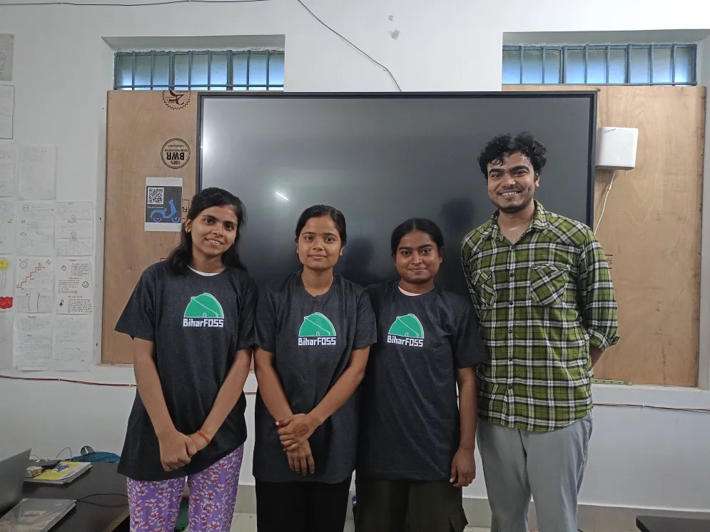

Vishal Arya – Founder of ERPNext Foundation & Key Contributor at FOSS United

Kiran Jonnalagadda – Co-founder of HasGeek & FOSS United Contributor

Rushabh Mehta – Founder of Frappe

Our team is committed to building a future where technology is accessible, open, and inclusive. We are inspired by the journey of the FOSS United Foundation, which has been a catalyst for open-source innovation in India since 2020.
FOSS United was founded through a collaboration between Frappe and Zerodha. It has grown from a one-person initiative by Vishal Arya to a strong community of developers and volunteers.
On 16th May 2025 at Thakurganj, a Git & GitHub competition was held. Our team participated and became Winners!
🎉 Congratulations to the winning team! 🎉
Vishal Arya – Founder of ERPNext Foundation & Key Contributor at FOSS United
Kiran Jonnalagadda – Co-founder of HasGeek & FOSS United Contributor
Rushabh Mehta – Founder of Frappe
We are proud to carry forward the mission of FOSS United and contribute to a more inclusive digital world. 🚀